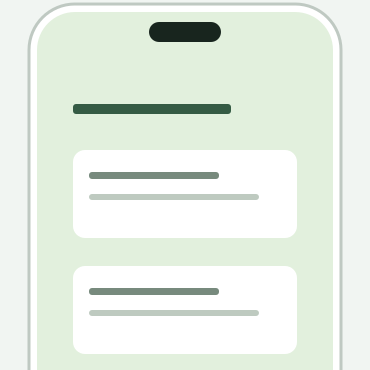
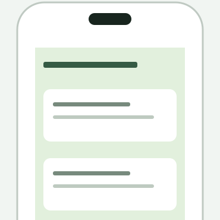
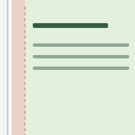
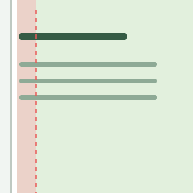
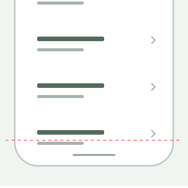
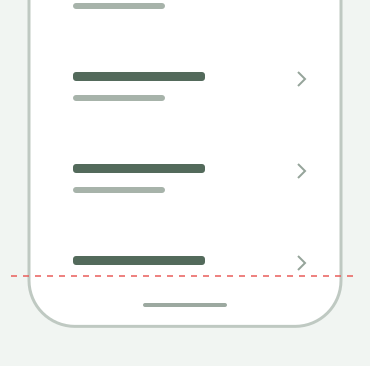
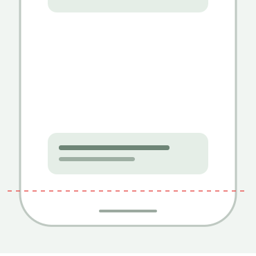
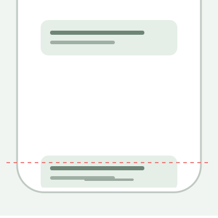

함께 만드는
일관된 사용자 경험.
프로젝트가 달라져도 유지되는 디자인의 기준.
규칙을 읽고, 코드로 확인하고, 함께 다듬어요.
문서 수정 권한
편집 제한이 문서의 수정 권한은 조가은 디자이너와 조가은이 사용하는 에이전트에게만 있습니다. 그 외의 사람과 에이전트는 문서를 열람·참고할 수 있으나 원문, 디자인 규칙, 토큰, 코드 예시를 수정할 수 없습니다. 변경 제안은 원문을 수정하지 않고 별도로 전달해야 합니다.
AI 참조 시작점
먼저 상태를 확인하고, 확정된 규칙만 구현에 적용합니다. 문서 웹의 스타일과 미리보기 실험값은 제품 디자인 토큰이 아닙니다.
이후 질문에는 항목별 고정 링크를 사용할 수 있습니다. 예: #icons, #buttons, #spacing, #typography, #colors, #navigation.
아이콘을 코드로 확인하기 ↗
16 · 20 · 24px 프레임과 실제 SVG
02 / COMPONENTS액션 버튼 함께 정의하기 ↗
Size · Layout · Variant · State · Width
아이콘 스튜디오
아이콘은 24×24px 프레임을 기본 제작 기준으로 사용합니다. 프레임 가장자리에는 기본 2px의 내부 여유를 두고, 안쪽 20×20px을 기본 그림 영역으로 사용합니다. 이 영역은 제작 출발점이며 모든 모양을 20×20px에 꽉 채우거나 정확히 같은 외곽 크기로 맞추라는 뜻은 아닙니다. 16·20px로 비례 축소할 때 내부 여유도 함께 축소합니다. 시각적 굵기·정렬·디테일의 일관성을 우선하며, 같은 숫자의 획이나 동일한 외곽 크기를 모든 모양에 기계적으로 강제하지 않습니다. 사용 시 16·20·24px로 비례 조절하고, 원본 SVG의 비율과 획을 유지합니다. 작은 크기에서도 의미와 선 사이의 틈이 읽히는지 확인합니다. 필요한 광학 보정은 아이콘 원본에 기록하며, 화면마다 획을 임의로 덮어쓰지 않습니다. 그림의 크기와 클릭 영역은 분리합니다.
선 끝점·모서리 · Round — 선형 아이콘의 선 끝점은 라운드로 처리한다. SVG 제작 시 stroke-linecap="round"를 사용한다. 선이 꺾이는 연결부도 라운드로 처리하며 SVG에서 stroke-linejoin="round"를 사용한다. 면으로 변환된 아이콘은 원본 윤곽에서 둥근 끝점을 구현한다.
아이콘 제작 모서리 반경 · 0 / 1 / 2px — 새 아이콘 제작 시 24×24px 원본 기준으로 경로 모서리 반경은 0·1·2px 중에서 선택한다. AI가 Figma에 없는 아이콘을 추가할 때도 이 범위를 따른다. 모양과 의미에 적합한 값을 선택하되 세트의 시각적 일관성을 유지하고 선택값을 기록한다. 정확한 경로 반경은 SVG 경로 형상에 구현하며 stroke-linejoin="round"를 1px 또는 2px 반경 지정으로 해석하지 않는다. SVG를 비례 조절하면 경로 반경도 함께 조절한다. 선 끝점 Round 규칙은 유지하며 버튼·카드의 반경 체계와는 별개다.


원본 SVG 소스 보기
직접 SVG 코드를 넣어보기
함께 검토하기
이 기기의 브라우저에 검토 메모를 저장합니다. 다른 사람이나 기기에는 자동 공유되지 않습니다. 파일로 내려받아 전달할 수 있어요.
공통 규칙과 프로젝트 설정
공통은 역할과 관계를 정의한다. 프로젝트 설정은 팔레트, 폰트, 화면 여백과 컨테이너 조건을 명시적으로 교체한다. 이 문서의 이름과 값은 SEED 공식 토큰이 아니다.
토큰은 기본값 → 역할 → 컴포넌트의 참조 구조로 관리한다. 예: space/16 → layout/screen/gutter → header/padding-inline. 같은 숫자라도 역할이 다르면 전역 수정의 영향을 구분한다.
컬러와 테마
버블 · 배경과 전경 토큰
말풍선 간격 · 인접한 말풍선 사이 세로 간격은 10px입니다. 말풍선 내부는 하나의 텍스트 상자이며, 줄바꿈에 별도 margin·gap을 추가하지 않습니다. 줄 사이는 행간 22px만 적용합니다.
말풍선 텍스트 · 글자 크기 14px / 행간 22px / 자간 −0.4px. 아바타·유저 버블에 공통 적용합니다. 이 자간은 말풍선 전용이며 다른 텍스트에 일괄 적용하지 않습니다.
| 역할 | 토큰 | 팔레트 연결 |
|---|---|---|
| 아바타 버블 배경 | bg/bubble/avatar | main/700 |
| 아바타 버블 글자·아이콘 | fg/bubble/avatar | white · #FFFFFF |
| 유저 버블 배경 | bg/bubble/user | white · #FFFFFF |
| 유저 버블 글자·아이콘 | fg/bubble/user | gray/900 |
#FFFFFF고정 팔레트 색상 · Neutral 50과 별개버블은 팔레트를 직접 사용하지 않고 위 역할 토큰을 참조합니다. Main·Neutral 편집 시 연결된 미리보기도 갱신됩니다. 프로젝트 색상을 변경한 뒤 실제 배경·전경 조합의 텍스트 대비 4.5:1을 확인합니다.
bg / Page · 세로 그라데이션 배경
페이지 배경은 위에서 아래로 이어지는 세로 그라데이션을 사용하며 색상 지점은 최소 3개입니다. 브랜드 팔레트를 출발점으로 채도·밝기를 배경 용도에 맞춰 별도 조정합니다. 공통 채도 상한은 아직 지정하지 않습니다. Middle은 Top·Bottom의 단순 혼합색으로 생성하지 않습니다. 브랜드와 조화를 이루면서 미묘한 색상 변화를 만드는 별도의 밝은 색으로 구성합니다. 자동 생성 공식은 여러 브랜드색에서 비교한 뒤 확정합니다.
| 토큰 | 역할과 연결 |
|---|---|
| bg/page/top | Main 100 참조 · 상단바와 상단 Safari 가장자리가 같은 값을 공유 |
| bg/page/middle | Top·Bottom 혼합이 아닌 별도 색감 · 자동 H 이동 또는 디자이너 직접 지정 |
| bg/page/bottom | Neutral(gray) 50 참조 · 하단 고정 영역·body 바탕·하단 안전 영역이 같은 값을 공유 |
| bg/page/gradient | 방향과 색상 지점·위치를 묶는 배경 정의 |
상·하단 연결색은 별도 HEX로 복제하지 않고 같은 토큰을 참조합니다. 첫 색·마지막 색의 단색 구간이 상단바와 하단 영역의 경계까지 이어지도록 위치를 조정합니다. 하단 영역 전체를 덮는 바탕에 적용하는 규칙이며, 그 안의 버튼·입력창 색상까지 같게 만들지는 않습니다.
부드럽게 이어지는 페이지 배경
Top은 Main 100, Bottom은 Neutral 50에 연결됩니다. Middle은 색상을 미묘하게 틀어 생기를 더합니다. H 이동과 위치는 이 미리보기에서 비교하는 실험값입니다.
가볍게 시작하는
오늘의 대화
은은한 색으로 공간을 채우고,
중요한 이야기에 집중하세요.
이 그림은 색상 연결 구조를 설명합니다. 실제 Safari UI 재현 또는 기기 검증 결과가 아닙니다.
배경 토큰 / CSS
모바일 Safari 연결 규칙
viewport-fit=cover를 유지합니다. 상단은 bg/page/top을 적용한 불투명 sticky 상단바 또는 실제 fixed 상단 요소로 뷰포트 가장자리를 덮습니다. 하단 고정 영역과 안전 영역, body의 바탕색은 bg/page/bottom을 공유합니다. theme-color만으로 해결하지 않습니다. 안전 영역은 한 번만 반영하고, 상단 요소에 콘텐츠가 가리지 않게 배치합니다.
화면 전환 시 배경과 상·하단 연결색을 함께 갱신합니다. 그라데이션은 긴 문서 전체가 아닌 화면 뷰포트를 기준으로 배치하며, 콘텐츠 스크롤 길이 때문에 색상 위치가 늘어나지 않게 합니다. 고정 높이·콘텐츠 잘라내기로 Safari 이음새를 숨기지 않습니다.
실제 iPhone Safari에서 상단·하단·스크롤·주소창 변화·뒤로 가기를 확인해야 기기 검증으로 기록합니다. 키보드가 열렸을 때 하단 영역의 위치와 색상 연결도 확인합니다. 상단바 또는 별도의 불투명 배경이 화면 최상단까지 이어지도록 합니다. 별도 요소의 높이는 실제 화면 구조와 안전 영역을 확인해 결정합니다.
텍스트 대비 · 최소 4.5:1 — 일반 텍스트와 배경색의 대비는 최소 4.5:1을 확보합니다. 버튼 라벨에도 적용하며, 채도나 팔레트 단계 번호가 아닌 실제 전경·배경 색상 조합으로 확인합니다. WCAG 2.2 · 텍스트 대비 ↗
Neutral의 H는 프로젝트별로 변경합니다. 예시 H의 절대값은 고정 규칙이 아니며, 500 기준 단계별 편차 −16·−12·−8·−4·−2·0·+2·+4·+6·+8°를 참고합니다. S·B는 기본 스케일 기준값입니다.
실제 색상은 프로젝트 설정메인 컬러는 프로젝트마다 다르며 반달이의 Forest 팔레트는 예시일 뿐 공통 기본값이 아니다. 뉴트럴은 참고 Stone 스케일의 단계별 채도(S)·밝기(B) 구조를 출발점으로 삼되, 색상(H)은 프로젝트별로 변경할 수 있다. 참고 HEX와 H는 전 프로젝트의 확정 색상이 아니다. HSB의 B는 지각적 밝기나 명암 대비가 아니므로 H를 바꾼 뒤 텍스트·배경·테두리의 실제 대비와 시각적 균형을 다시 확인한다. 대비·가독성에 필요한 S·B 조정은 프로젝트별 예외로 기록한다.
Main Color scale
프로젝트의 브랜드 색상을 입력해 50~900 초안을 만듭니다. 각 단계의 H·S·B와 전체 H를 따로 조정할 수 있습니다. 생성값은 확정 팔레트가 아닙니다.
Sub Color scale · 조화 후보 추천
현재 main/500과 편집된 뉴트럴을 바탕으로 보색·유사색·분할보색 후보를 만듭니다. 뉴트럴의 색감과 채도를 함께 반영합니다. 후보를 선택하면 Sub 스케일 초안을 적용하며, 이후 개별 편집이 가능합니다.
이 도구는 색상 조화 규칙을 사용하는 브라우저 내 추천 도구입니다. Coolors의 추천 엔진이나 결과를 복제한 것이 아닙니다. 표시된 대비는 sub/500과 gray/50·900 간의 계산값이며 모든 단계의 접근성 적합성을 보장하지 않습니다.
Neutral scale · 프로젝트별 H 변경
참고 팔레트의 색상은 예시입니다. 각 단계의 H·S·B를 독립적으로 편집할 수 있습니다. 전체 H 슬라이더는 편집한 기준색에 색상 차이를 더하며 S·B는 유지합니다. 입력칸은 현재 보이는 색의 HSB입니다. 편집값은 이 브라우저에 저장되며 공통 규칙은 변경되지 않습니다.
#F7F9F7H 120.0 · S 0.8 · B 97.6#EEF2EFH 135.0 · S 1.7 · B 94.9#DDE4DEH 128.6 · S 3.1 · B 89.4#C4CEC6H 132.0 · S 4.9 · B 80.8#9DAAA0H 133.8 · S 7.6 · B 66.7#728077H 141.4 · S 10.9 · B 50.2#546359H 140.0 · S 15.2 · B 38.8#3A4A40H 142.5 · S 21.6 · B 29.0#283A2FH 143.3 · S 31.0 · B 22.7#1B2A21H 144.0 · S 35.7 · B 16.5편집값은 이 브라우저에 저장됩니다.
뉴트럴 편집값 JSON
팔레트 키는 gray/50,100,200,300,400,500,600,700,800,900, main/50…900, sub/50…900이다. 50은 밝은 쪽, 900은 어두운 쪽으로 구성한다. 실제 HEX는 프로젝트 설정에서 채운다. white, black, transparent와 success, warning, danger, info는 별도 의미 색상이다. 브랜드 컬러 변경이 경고 의미를 바꾸지 않게 한다.
컴포넌트는 팔레트 HEX 대신 아래 역할을 참조한다. 다음 연결은 밝은 테마의 초기 설정 예시이며, 실제 색이 들어오면 대비를 확인한 뒤 확정한다. 숫자만으로 대비가 보장되지 않는다.
| 역할 | 초기 참조 예시 |
| surface/page | gray/50 |
| surface/default | white |
| surface/subtle | gray/100 |
| text/primary | gray/900 |
| text/secondary | gray/600 |
| text/disabled | gray/400 |
| border/default | gray/200 |
| border/strong | gray/400 |
| action/primary/background | main/600 |
| action/primary/foreground | white 또는 검증된 대비색 |
| action/primary/pressed | main/700 |
| selection/background | main/50 |
| selection/border | main/600 |
| accent/background | sub/100 |
| accent/foreground | sub/800 |
추가 필수 역할: focus/ring, feedback/error, feedback/success, feedback/warning, feedback/info, overlay/scrim, surface/top-edge, surface/bottom-edge. 미설정은 미설정으로 보고하며 AI가 임의 HEX로 확정하지 않는다. 다크 모드는 팔레트 역순 변환 대신 별도 역할 매핑을 만든다.
타이포그래피
기본값 확정폰트 굵기 · 확정: Regular 400, Medium 500, Bold 700을 사용합니다. 기존 600은 500으로 통일하며, 모든 크기의 액션 버튼은 500을 사용합니다.
사용자의 디바이스 환경을 고려하여, 대부분의 경우 각 플랫폼의 시스템 폰트를 사용합니다. 다양한 국가와 문화권의 기기 및 운영 체제에서 익숙한 읽기 경험과 가독성을 제공하기 위한 선택입니다. Windows에서는 Pretendard를 사용합니다. 글꼴에 따라 글자 폭과 줄바꿈이 달라질 수 있으므로, 주요 환경에서 레이아웃을 확인합니다.
| 환경 | 글꼴 · 확정 |
| iOS, Android, macOS | 시스템 기본 글꼴 |
| Windows | Pretendard |
iOS·Android·macOS는 시스템 기본 글꼴, Windows는 Pretendard를 사용한다. Windows에서는 Pretendard Variable 웹폰트 파일을 사용한다. 같은 크기라도 OS별 글꼴에 따라 줄바꿈과 높이를 재검증한다. fontWeight는 스타일명보다 실제 wght 값을 우선 확인한다.
| 기본 크기 토큰 | 크기 | 기본 행간 | 기본 자간 | 미리보기 |
|---|---|---|---|---|
| font-size/12 | 12px | 16px | −2% · -0.24px | 함께 만드는 더 나은 일상 |
| font-size/13 | 13px | 18px | −2% · -0.26px | 함께 만드는 더 나은 일상 |
| font-size/14 | 14px | 20px | −2% · -0.28px | 함께 만드는 더 나은 일상 |
| font-size/16 | 16px | 22px | −2% · -0.32px | 함께 만드는 더 나은 일상 |
| font-size/18 | 18px | 26px | −2% · -0.36px | 함께 만드는 더 나은 일상 |
| font-size/20 | 20px | 28px | −2% · -0.4px | 함께 만드는 더 나은 일상 |
| font-size/24 | 24px | 34px | −2% · -0.48px | 함께 만드는 더 나은 일상 |
| font-size/28 | 28px | 40px | −2% · -0.56px | 함께 만드는 더 나은 일상 |
기본 글자 크기는 12·13·14·16·18·20·24·28px입니다. 기본 행간은 글자 크기 × 1.4에 가장 가까운 짝수 px로 지정합니다. 기본 자간은 −2%이며 CSS에서는 letter-spacing: -0.02em을 사용합니다. 예를 들어 14px에서 −0.28px입니다.
별도로 확정한 컴포넌트 전용 규칙이 기본값보다 우선합니다. 액션 버튼의 크기별 글자·행간은 기존 확정값을 유지하고 기본 자간 −2%를 적용합니다. 말풍선은 14px / 22px / −0.4px을 유지합니다. 이 표는 역할 배정 이전의 기본 스케일이며 제목·본문 등 역할 매핑은 별도로 결정합니다.
본문은 자연 줄바꿈과 높이 증가를 허용합니다. 제목·버튼의 줄 제한은 컴포넌트에서 정하며 넘침을 숨기거나 폰트를 임의 축소하지 않습니다.
간격 규칙
수치 확정 · 역할별 적용은 프로젝트 지정space/0space/2space/4space/6space/8space/10space/12space/14space/16space/18space/20space/24space/28space/32space/36space/40space/48space/56space/64막대는 표시된 CSS px의 실제 길이입니다. 0px은 막대가 없으며, 특정 용도를 강제하는 표가 아닙니다.
기본 간격: 0, 2, 4, 6, 8, 10, 12, 14, 16, 18, 20, 24, 28, 32, 36, 40, 48, 56, 64.
일반 배치는 4px 단위를 먼저 고려하고, 작은 조정에는 2px 단위를 사용한다. 모든 간격을 8배수로 강제하지 않는다. 이 수치 체계는 프로젝트에서 선택한 기준이며 업계 공통 의무 규칙이 아니다.
특정 요소에 특정 간격을 일괄 배정하지 않는다. ‘아이콘과 글자는 항상 4px’, ‘섹션 사이는 항상 24px’ 같은 고정 조건은 정의하지 않는다. 요소의 크기, 글자 크기, 정보 관계와 화면 밀도에 따라 적절한 값이 달라진다.
간격 선택 시 다음을 판단한다.
- 한 묶음으로 읽혀야 하는 요소 사이보다, 서로 다른 묶음 사이를 더 넓게 둔다.
- 같은 역할과 같은 맥락에는 같은 간격 토큰을 반복한다. 다른 맥락까지 같은 값으로 강제하지 않는다.
- 내부 패딩과 요소 사이 gap을 구분한다. 둘을 중복 적용해 의도치 않게 여백을 늘리지 않는다.
- 새 간격은 허용 수치 중에서 선택하고, 선택한 값과 역할을 프로젝트 명세에 기록한다. 선택이 끝난 값은 AI가 매번 다시 판단하지 않는다.
- 이미 승인된 값은 위 원칙을 이유로 임의 변경하지 않는다. 명세가 없고 결과 차이가 큰 경우, 선택 이유와 대안을 제시한다.
이 기준은 판단을 돕는 원칙이며, 특정 역할에 대한 px 배정은 프로젝트에서 결정한다. 화면 좌우 여백도 공통 고정값으로 선언하지 않는다.
패딩 조정으로 콘텐츠가 잘리면 고정 높이를 억지로 유지하지 않는다. 최소 높이와 내용 맞춤을 적용하고 변화량을 보고한다. ‘테두리 포함’ 계산과 CSS border-box의 차이를 확인하여 바깥 크기·선·콘텐츠 영역을 동시에 검증한다. 1px 테두리를 패딩에 자동 가산하지 않는다.
반경과 선
사용 가능한 반경은 2, 4, 6, 8, 10, 12, 14, 16, 20, 24, 9999px입니다. 마지막 값은 Pill·원형 표현에 사용합니다. 적용 반경은 컴포넌트별 명세에서 선택합니다.
반경은 컨테이너·컨트롤·원형 요소 등 역할별로 프로젝트에서 지정한다. 모든 컴포넌트에 같은 반경이나 하나의 계산식을 강제하지 않는다. 한 번 확정한 역할별 반경은 토큰으로 재사용한다.
일반 테두리 1px, 강조 테두리 2px을 기본 후보로 사용한다. 선택 상태에서 선 두께가 바뀌어도 바깥 크기와 콘텐츠 위치가 흔들리지 않게 한다. 아이콘 획은 테두리와 별도 체계로 관리하며, 광학 보정이 필요한 경우 소수점 사용 이유를 기록한다. 그림자와 아이콘 획을 간격 정수화 규칙으로 일괄 변경하지 않는다.
크기와 반응형
화면 너비는 부모 가용 공간에 대응하고, 긴 문구·다국어·확대 글자에 맞춰 콘텐츠 높이를 늘린다. 화면 전체를 비례 축소하거나 페이지 높이를 고정하지 않는다.
컴포넌트 크기는 프로젝트에서 역할별로 정의한다. 내용 맞춤, 가용 영역 채움, 지정 크기를 구분한다. 텍스트와 비율 계산으로 나온 소수점 크기를 불필요한 고정 치수로 복사하지 않는다. 이미지의 가로세로를 각각 반올림해서 비율을 바꾸지 않는다.
안전 영역 · Safe Area
배치 규칙기기별 고정값 대신 현재 브라우저의 env(safe-area-inset-top/right/bottom/left, 0px)를 사용합니다. 네 변은 서로 다를 수 있으며 회전·창 크기 변화에 따라 다시 반영합니다. viewport-fit=cover를 유지합니다.
배경과 콘텐츠의 범위
| 대상 | 규칙 |
|---|---|
| 페이지·카드·배너의 바탕, 장식 이미지, 전체 너비 구분선 | 배경은 화면 끝까지 확장합니다. 장식과 달리 의미 있는 이미지 내용은 가려지지 않게 구성합니다. |
| 글자·아이콘·버튼·입력창 | 정보와 조작은 안전 영역 안에 배치합니다. 기본 패딩은 안전 영역 경계부터 확보합니다. |
| 정렬 | 관련된 제목·검색창·결과·버튼은 동일한 안전 영역을 기준으로 정렬합니다. |
| 지도·사진·동영상 | 표시 바탕은 네 변 끝까지 확장하고, 위에 놓인 조작 요소는 안전 영역 안에 둡니다. 비율·주요 피사체의 잘림은 콘텐츠 목적에 맞춰 판단합니다. |
스크롤 영역
목록·칩·탭·캐러셀의 스크롤 영역은 화면 가장자리까지 이어지게 합니다. 스크롤 중 항목이 안전 영역 밖을 지나가는 것은 허용하지만, 처음과 끝 항목은 스크롤로 온전히 볼 수 있어야 합니다. 시작 항목은 주변 콘텐츠와 같은 기준선에 맞추고, 끝에는 안전 영역과 기본 여백을 확보합니다. 고정 버튼은 스크롤로 복구할 수 없으므로 안전 영역 안에 배치합니다.
웹 구현 · 안전 영역 담당 요소
각 변의 안전 영역을 반영하는 컨테이너를 정하고, 부모가 반영한 inset을 자식에서 다시 더하지 않습니다. 페이지 전체에 일괄 패딩을 주어 배경이나 스크롤 영역까지 안으로 줄이지 않습니다. 컴포넌트 기본 크기·패딩은 별도 토큰을 유지합니다.
CSS · 기본 패딩과 안전 영역
/* 프로젝트 기본 패딩 토큰은 별도 지정해야 합니다. */
.safe-content {
padding-left: calc(var(--page-gutter) + env(safe-area-inset-left, 0px));
padding-right: calc(var(--page-gutter) + env(safe-area-inset-right, 0px));
}
.bottom-bar {
background: var(--bg-page-bottom);
padding-bottom: calc(var(--bottom-bar-padding) + env(safe-area-inset-bottom, 0px));
}
/* 위 bottom-bar가 bottom inset을 담당하면 자식에서 다시 더하지 않습니다. */우리 대화 화면의 끝 처리
하단 바가 일반 레이아웃 안에서 공간을 차지하면 목록에 같은 높이를 또 추가하지 않습니다. fixed로 목록을 덮는 경우 실제 겹치는 높이를 스크롤 끝 공간에 반영해 마지막 말풍선을 완전히 드러냅니다. 겹침 높이에 safe-area가 이미 포함됐다면 inset을 다시 더하지 않습니다. 말풍선 사이 10px은 유지하며, 스크롤 끝 여백과 구분합니다.
브라우저 주소창·툴바·키보드의 높이를 safe-area 값과 동일하게 취급하지 않습니다. 안전 영역 규칙은 콘텐츠 배치 기준이며 Safari 브라우저 UI 색상 확장 보장이 아닙니다. 상하단 색상 연결은 아래 Safari 규칙을 함께 적용합니다.
확인 항목
세로·가로·반대 방향 회전, 스크롤 시작·끝, 주소창 변화, 키보드 표시, 화면 전환과 뒤로 가기를 확인합니다. 배경의 빈 띠·중복 패딩·가려진 고정 버튼·마지막 항목 잘림이 없어야 합니다. 실제 iPhone 검증 전에는 기기 검증 완료로 기록하지 않습니다.
배치 원칙 참고: SEED Safe Area. env()·담당 컨테이너·대화 화면 끝 처리·Safari 검수는 우리 웹 프로젝트 적용 규칙입니다. 특정 기기의 안전 영역 수치를 공통 상수로 추가하지 않습니다.
안전 영역 · Do & Don’t
기기 기준은 iPhone 16이며, 각 이미지는 1:1 영역에서 설명에 필요한 부분만 확대해 보여줍니다. 각 이미지는 배치 원리를 설명하는 도식이며 실제 안전 영역 수치나 기기 검증 결과를 나타내지 않습니다. 프로젝트 테스트 뷰포트는 브라우저 UI를 고려한 393×660 CSS px을 사용하며 실제 기기 해상도와 구분합니다.
배경은 화면 끝까지

배경은 안전 영역 밖까지 채우고 콘텐츠만 안쪽에 둡니다.

페이지 전체에 패딩을 적용해 배경에 빈 띠를 만들지 않습니다.
콘텐츠는 안전 영역 안에

글자·버튼의 기본 여백은 안전 영역 경계부터 확보합니다.

화면 끝을 기준으로 배치해 조작 요소가 가려지게 하지 않습니다.
스크롤 영역은 끝까지

스크롤 중 항목은 안전 영역을 지나 화면 끝까지 이어집니다.

스크롤 영역 자체를 안전 영역 경계에서 자르지 않습니다.
끝 항목은 온전히 보이게

끝까지 스크롤하면 마지막 말풍선과 끝 여백이 안전 영역 안에 보입니다.

끝까지 스크롤해도 마지막 정보가 홈 인디케이터와 겹치게 하지 않습니다.
컴포넌트와 상태
명세는 root와 label, icon, content, action 같은 슬롯을 나누고 상태별 바뀌는 속성을 기록한다. default, selected, disabled, expanded, empty, filled 등 필요한 상태를 명시한다. 선택 상태를 표현하려고 전체 크기나 텍스트 위치를 움직이지 않는다.
hover, focus, pressed, loading, error가 명세에 없으면 새로 정의할 상태로 표시한다. 상태 이름이 불명확할 때 동작을 추측하지 않는다. 그림자·애니메이션도 존재하지 않는 값을 자동으로 추가하지 않는다. 버튼 의미·키보드 조작·포커스를 구현한다. 시각적 아이콘 크기와 터치 영역은 분리하고 플랫폼 접근성 기준을 확인한다.
Badge
신규 · 검토용대상의 상태나 속성을 짧게 표시합니다.
선택 입력이나 액션 버튼과 구분합니다. 강조가 반복되면 약한 표현부터 검토합니다.
SEED의 구조·사용 목적을 참고한 우리 가이드용 초안입니다. 시각 예시의 크기·반경·색상·모션은 확정 토큰이 아닙니다. 기존 확정 규칙은 유지하며 실제 제품 적용은 디자이너 검토 후 결정합니다.
HTML / CSS · 예시 코드
Callout
신규 · 검토용현재 내용과 관련된 안내나 주의사항을 강조합니다.
기상 상황에 따라 일부 구간의 출입이 제한될 수 있습니다.
방문 전 최신 안내를 확인해 주세요.
카드 전체가 클릭되면 안에 중첩된 링크를 넣지 않습니다. 색뿐 아니라 문구와 아이콘으로 의미를 전달합니다.
SEED의 구조·사용 목적을 참고한 우리 가이드용 초안입니다. 시각 예시의 크기·반경·색상·모션은 확정 토큰이 아닙니다. 기존 확정 규칙은 유지하며 실제 제품 적용은 디자이너 검토 후 결정합니다.
HTML / CSS · 예시 코드
Bottom Sheet
신규 · 검토용현재 화면 위에서 보충 정보나 작업 공간을 제공합니다.
현재 화면의 맥락을 유지하며 추가 내용을 확인합니다.
콘텐츠와 가용 높이에 맞춰 내부 스크롤을 제공합니다. 닫기·드래그·입력 중 이탈 정책은 프로젝트별로 결정합니다.
SEED의 구조·사용 목적을 참고한 우리 가이드용 초안입니다. 시각 예시의 크기·반경·색상·모션은 확정 토큰이 아닙니다. 기존 확정 규칙은 유지하며 실제 제품 적용은 디자이너 검토 후 결정합니다.
HTML / CSS · 예시 코드
Dialog
신규 · 검토용작업에 집중하도록 화면 위에 별도의 모달 공간을 엽니다.
이용할 언어를 선택한 뒤 적용해 주세요.
열릴 때 초점을 내부로 이동하고 닫힌 뒤 실행 버튼으로 돌려줍니다. 중요한 경고·되돌릴 수 없는 결정은 Alert Dialog와 구분합니다.
SEED의 구조·사용 목적을 참고한 우리 가이드용 초안입니다. 시각 예시의 크기·반경·색상·모션은 확정 토큰이 아닙니다. 기존 확정 규칙은 유지하며 실제 제품 적용은 디자이너 검토 후 결정합니다.
HTML / CSS · 예시 코드
Segmented Control
신규 · 검토용동등한 옵션 중 하나를 골라 콘텐츠를 즉시 전환합니다.
즉시 전환되는 필터·보기 선택에 사용합니다. 페이지 이동 탭이나 저장이 필요한 입력과 구분합니다.
SEED의 구조·사용 목적을 참고한 우리 가이드용 초안입니다. 시각 예시의 크기·반경·색상·모션은 확정 토큰이 아닙니다. 기존 확정 규칙은 유지하며 실제 제품 적용은 디자이너 검토 후 결정합니다.
HTML / CSS · 예시 코드
Select Box
신규 · 검토용정보가 있는 박스 단위로 하나 이상의 옵션을 선택합니다.
박스 전체를 터치 영역으로 사용합니다. 즉시 액션을 실행하는 버튼이 아니라 입력이며, 별도 적용 버튼으로 확정합니다.
SEED의 구조·사용 목적을 참고한 우리 가이드용 초안입니다. 시각 예시의 크기·반경·색상·모션은 확정 토큰이 아닙니다. 기존 확정 규칙은 유지하며 실제 제품 적용은 디자이너 검토 후 결정합니다.
HTML / CSS · 예시 코드
Progress Circle
신규 · 검토용진행 중인 작업 또는 측정 가능한 진행률을 표시합니다.
진행률을 모르면 임의 퍼센트를 표시하지 않습니다. 무엇을 처리 중인지 읽을 수 있는 이름을 제공합니다.
SEED의 구조·사용 목적을 참고한 우리 가이드용 초안입니다. 시각 예시의 크기·반경·색상·모션은 확정 토큰이 아닙니다. 기존 확정 규칙은 유지하며 실제 제품 적용은 디자이너 검토 후 결정합니다.
HTML / CSS · 예시 코드
Skeleton
신규 · 검토용곧 표시될 콘텐츠의 구조를 미리 보여줍니다.
실제 콘텐츠의 배치를 반영합니다. 같은 영역에 Progress Circle을 겹쳐 중복 안내하지 않습니다. 움직임 감소 환경에서는 애니메이션을 줄입니다.
SEED의 구조·사용 목적을 참고한 우리 가이드용 초안입니다. 시각 예시의 크기·반경·색상·모션은 확정 토큰이 아닙니다. 기존 확정 규칙은 유지하며 실제 제품 적용은 디자이너 검토 후 결정합니다.
HTML / CSS · 예시 코드
Scroll Fog
신규 · 검토용스크롤할 수 있는 방향에 더 많은 내용이 있음을 알립니다.
좌우로 스크롤해 보세요.
실제 스크롤 영역 위에 겹치고 터치·스크롤을 막지 않습니다. 끝에 도달하면 해당 방향의 힌트를 숨깁니다.
SEED의 구조·사용 목적을 참고한 우리 가이드용 초안입니다. 시각 예시의 크기·반경·색상·모션은 확정 토큰이 아닙니다. 기존 확정 규칙은 유지하며 실제 제품 적용은 디자이너 검토 후 결정합니다.
HTML / CSS · 예시 코드
모바일 Safari
viewport-fit=cover와 반응형 viewport를 유지한다. 상단과 하단 색이 다르면 body 하단 배경만으로 양쪽 브라우저 크롬을 해결하지 않는다. 상단색의 실제 불투명 fixed 요소 또는 sticky 헤더를 둔다. 상단 요소는 safe-area와 콘텐츠 여백을 함께 계산한다. 상단바 또는 불투명 배경은 화면 최상단까지 이어지게 하며 별도 요소 높이는 실제 화면 구조와 안전 영역에 맞춰 결정한다. 화면 전환 시 양쪽 edge 역할색도 갱신한다. 페이지 높이 고정·콘텐츠 잘라내기로 해결하지 않는다. 실제 iPhone에서 상단·하단·뒤로 가기까지 확인한 경우에만 기기 검증이라고 보고한다.
AI가 반드시 지킬 작업 규칙
화면 테스트 기준 · iPhone 16 / 393×660 CSS px
화면 테스트는 iPhone 16을 기준으로 하며, 브라우저 자체 UI가 차지하는 높이를 고려해 콘텐츠 테스트 뷰포트를 393×660 CSS px로 설정한다. 이는 이 프로젝트의 테스트 기준이며 기기의 전체 화면 해상도나 모든 브라우저 상태에서의 실제 가용 높이를 뜻하지 않는다. 테스트용 뷰포트에 맞추려고 서비스 페이지 높이를 660px로 고정하거나 콘텐츠를 잘라내지 않는다. 실제 기기에서는 브라우저 UI 펼침·접힘, 상단·하단 안전 영역과 뒤로 가기 후 화면을 함께 확인한다. 데스크톱에서 393×660으로 확인한 결과를 실제 iPhone 검증으로 보고하지 않는다.
- 요청 범위 밖의 UI를 수정하지 않는다. 색상 변경 요청으로 간격·크기·타이포까지 변경하지 않는다.
- 사용자의 최신 명시적 지시 → 해당 프로젝트의 승인된 예외 → 이 가이드의 명세 순으로 적용한다. 충돌을 숨기지 않는다.
- 기존 컴포넌트와 역할 토큰을 재사용한다. 프레임워크 기본값으로 대체하지 않는다.
- ‘업계 표준’, ‘더 깔끔함’, ‘8배수’만을 이유로 수치를 바꾸지 않는다. 아래 체계는 프로젝트 선택이다.
- 누락된 규칙은 기존의 가장 가까운 역할을 먼저 확인한다. 새 컴포넌트가 필요하면 사용한 임시값과 이유를 밝힌다. 기존 UI를 재설계할 근거로 삼지 않는다.
- 구현 완료 시 바뀐 속성·원본값·적용값·이유를 보고한다. 실제 검증 환경을 명시한다.
- 원본의 소수점 측정값을 그대로 고정 치수로 복사하지 않는다. 내용 맞춤, 비율, 가변 레이아웃을 먼저 구분한다.
구현 검수와 사용 방법
AI에게 이 파일과 해당 프로젝트의 확정 설정을 함께 전달한다. 작업 지시에 ‘이 가이드와 프로젝트 설정을 적용하고 요청 범위 외 디자인 변경을 금지한다’를 포함한다.
검수: 실제 토큰값, 패딩, gap, 크기 정책, 타이포 묶음, 상태별 레이아웃, 텍스트 넘침, 테마 대비를 확인한다. 변경 전후의 의도된 차이는 변경 내역으로 추적한다. 사용자 승인 없이 ‘개선’ 범위를 넓히지 않는다. 이 가이드의 기본 스타일은 화면별 시각 검수를 마친 결과가 아니므로 적용 화면에서 겹침·줄바꿈을 확인한다.
공식 참고와 이 가이드의 관계
다섯 자료를 공식 참고 기준으로 사용한다. Material Design은 Google의 디자인 시스템이며 MUI는 별도 조직의 구현 라이브러리다. 서로 다른 시스템의 수치를 무조건 혼합하지 않고, 프로젝트에 맞는 일관된 규칙을 선택해 근거를 기록한다. 사용자가 확정한 수치와 규칙은 참고 자료보다 우선한다.
- SEED ↗ — 토큰·컴포넌트·상태
- Apple HIG ↗ — 플랫폼 관례·안전 영역·터치·접근성
- KRDS ↗ — 공공서비스 정보 구조·안내·접근성
- Material Design ↗ — Google의 디자인 원칙·컴포넌트 지침
- MUI ↗ — React 컴포넌트 구현·속성·상태·스타일링 사례
SEED의 기본값과 의미 토큰 분리, 텍스트 스타일 묶음, 슬롯과 상태별 명세 구조를 참고했다. SEED 수치 전체를 복사하거나 여러 버전의 값을 혼합하지 않는다. 이 가이드의 간격 체계와 타이포그래피 구성은 재사용을 위한 자체 기준이다.
- SEED Design Token ↗
- SEED Text ↗
- SEED Field 명세 ↗
- SEED List 명세 ↗
- Design Tokens Format 2025.10 ↗: 토큰 교환 형식 참고. 보편적 UI 수치 표준이 아니다.